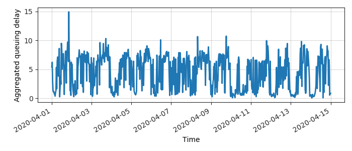
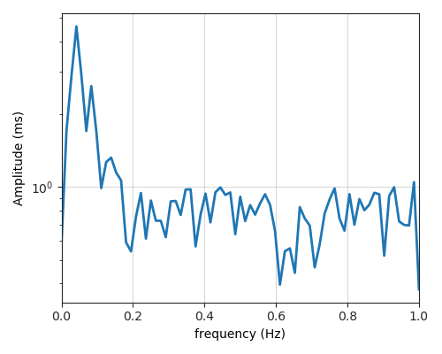
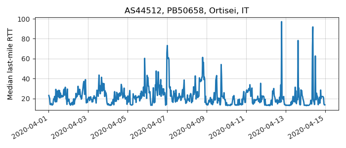
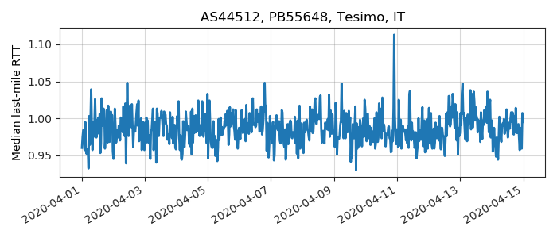

---
layout: default
title: Last-mile delay survey / 2020-04-01 / AS44512
---
AS44512, KONVERTO-AS, IT
Summary
- Daily last-mile fluctuations: severe
- Number of probes: 3
- APNIC eyeball rank: 5937
- Daily fluctuations: True
- Main frequency: 0.0417
- Average peak-to-peak amplitude: 4.60ms
Aggregated last-mile queuing delay

Periodogram

24H profile

Probes' last-mile RTT
- 

- 